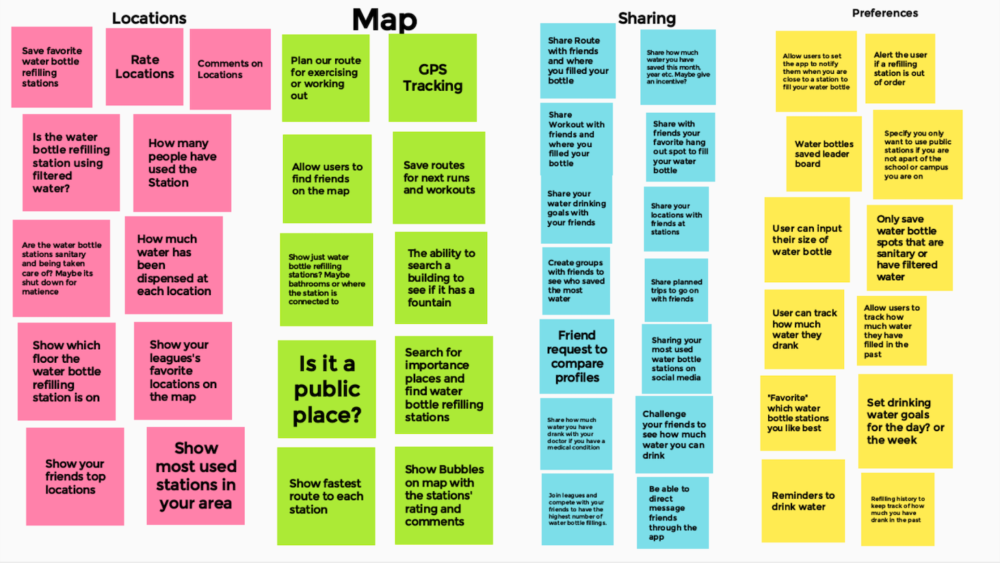
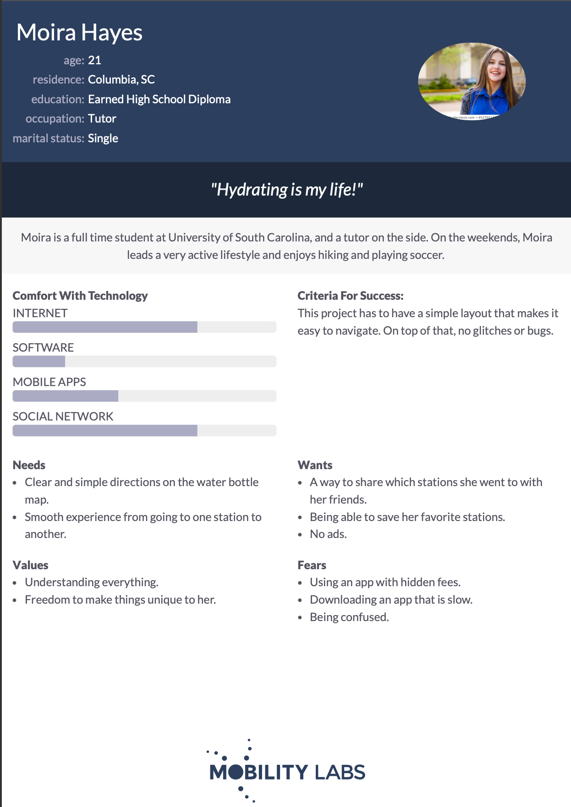
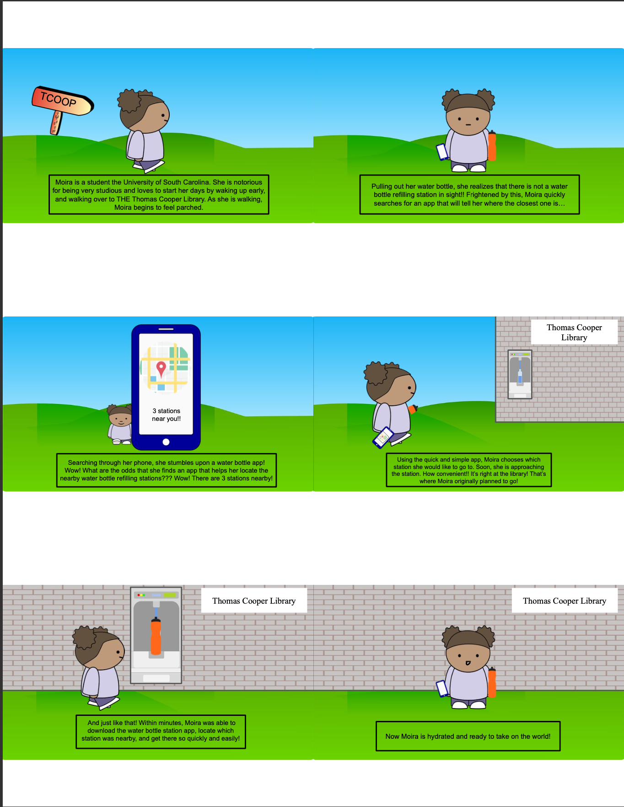
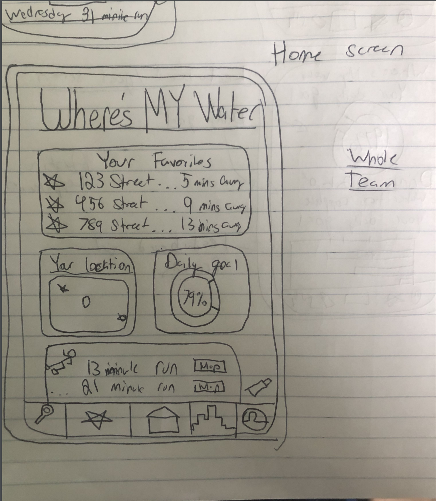
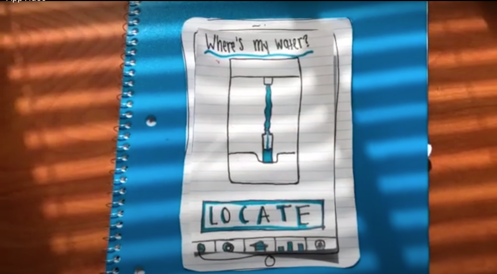
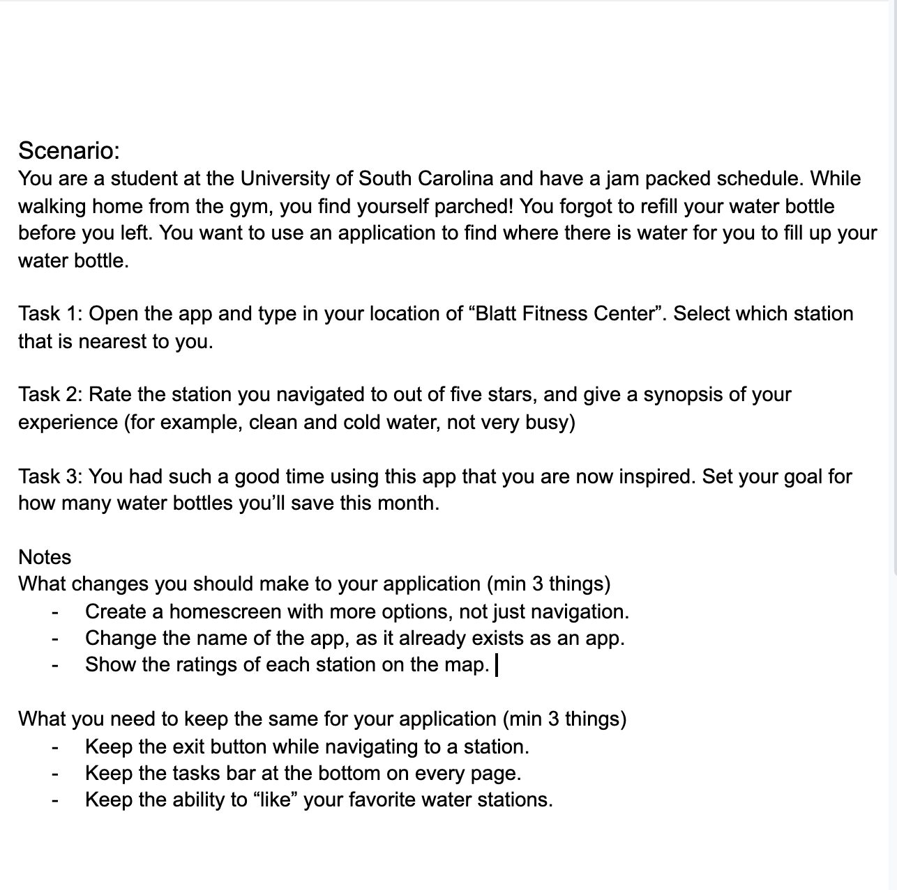
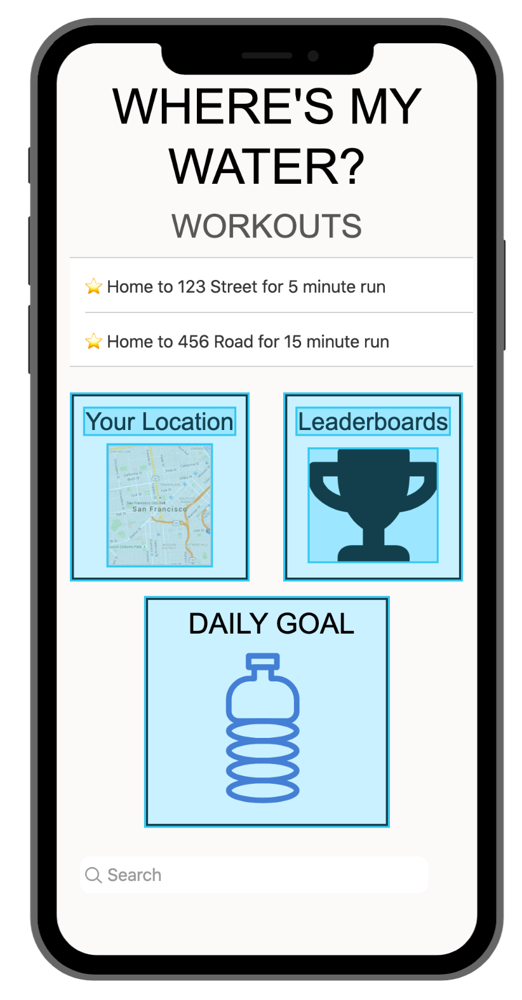

Problem Statement: Water Bottle Stations

Our users are experiencing frustration while trying to find safe and clean water bottle refilling stations around college campuses. Our solution is to provide the users with a map of their college campus with points on the map that show water bottle refilling stations.
Affinity Diagram: Water Bottle Stations
My group and I worked to come up with many different components we'd like to have on our website.
Persona: 4 Personas for Water Bottle Stations
Four personas comprised of typical water bottle refilling app users.
Storyboard: 4 Personas for Water Bottle Stations
A display of comics to show how our app works for the average water drinker.
Sketches: Water Bottle Filling App
Sketches of what my group's app would potentially look like.
Paper Prototype: Water Bottle Filling App
A video of a drawn version of how our app would function.
Usability Testing: Water Bottle Filling App
Various tasks to complete the outcome of usability tests.
Low-fi Prototype: Water Bottle Filling App
A low-fi prototype of our water bottle app.